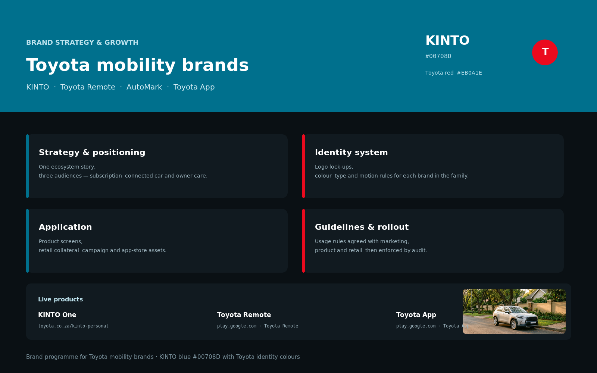

The brands
Three products. One family.
Toyota South Africa needed three digitally-led products to feel like a coherent ecosystem — each with its own personality, but unmistakably related. KINTO is subscription-first and service-oriented. The Toyota App is the owner's companion. Toyota Remote puts the car in the driver's pocket.
KINTO One
Vehicle subscription portal — flexible, all-inclusive monthly mobility for individuals and fleet managers. Built on Toyota's trust equity with KINTO Blue #00708D as the defining brand mark.
Toyota App
Owner's companion — service bookings, roadside assist, ownership documents and dealer connect. The post-purchase relationship in one app, anchored in Toyota Red #EB0A1E.
Toyota Remote
Connected-car control — lock/unlock, vehicle status, trip history and remote start. A high-trust product where a design error has real-world consequences. Zero tolerance for ambiguity.
Discovery & research
Alignment before aesthetics.
Three products with three different teams, three different vendor codebases, and customers who moved between them. The brand strategy started with deep research — not a mood board.
- → Stakeholder interviews across Toyota SA, KINTO and app-vendor teams
- → Customer journey mapping from test-drive to owner to KINTO subscriber
- → Competitive teardown: 12 global mobility brands, 4 SA market comparators
- → Usability audit of every existing Toyota SA digital touchpoint
- → Brand perception survey: 200 Toyota owners and KINTO prospects
Brand strategy
Positioning that earns the premium.
The brief said "make it feel premium." The strategy work said: define what premium means for a South African driver, then build every touchpoint around that definition.
Brand architecture
Toyota as the parent trust. KINTO as aspirational, service-forward mobility. The apps as post-purchase relationship tools. Three distinct voices, one family.
Identity system
KINTO Blue #00708D as the KINTO primary mark. Toyota Red #EB0A1E anchoring the parent. Shared type scale, icon grid and component library applied across all three products.
Voice & tone
Confident but human. Not corporate-stiff. Language that respects the driver's intelligence — short, direct, never condescending. Consistent across app copy, portal microcopy and push notifications.
Growth mechanics
Referral flows in KINTO portal. Retention loops in Toyota App. Upsell pathways from Toyota Remote into KINTO One subscriptions. Growth designed into the product, not bolted on after.
Measurement framework
KPIs set before design: portal conversion, app DAU, Remote active sessions weekly, NPS at 90 days post-subscription. Every design decision was tested against them.
Launch playbook
Phased rollout across SA regions. Dealer training materials. In-app onboarding flows co-designed with the Toyota SA marketing team for local relevance.
Design process
From brief to live product.
Brand strategy and product design run together in this practice — the same pair of hands held the strategy and the Figma file. No translation loss, no handoff gaps.
Competitive teardown, customer interviews and a full usability audit of existing Toyota SA digital touchpoints.
Card sorting with actual Toyota owners. Navigation rebuilt around tasks, not product categories or org-chart logic.
Lo-fi flows for three core journeys: subscribe (KINTO), book service (Toyota App), arm/disarm (Toyota Remote).
High-fidelity screens in Figma. KINTO Blue and Toyota Red applied via strict design tokens for consistency at scale.
Moderated sessions with KINTO prospects and Toyota owners. Two full redesigns of the Remote control screen after testing revealed navigation anxiety.
Dev-ready component specs. Redline annotations. Post-launch analytics review at 30 and 90 days against the pre-set KPIs.
Outcomes
Numbers from the live products.
Three separate products, one coherent brand story. The design system built here now serves as the foundation for all new Toyota digital products in the South African market.